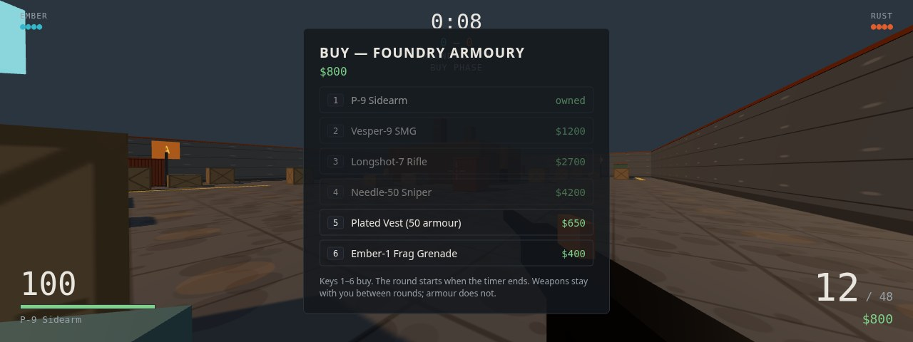
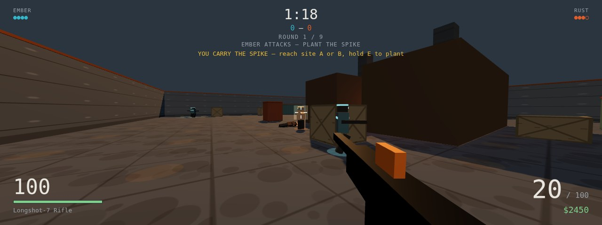
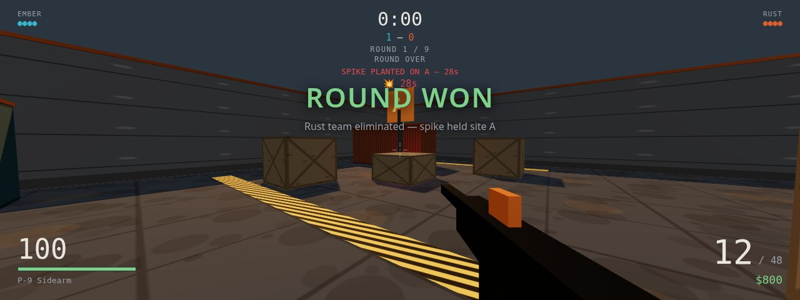

№ 01
Cloudbreak
Submitted
AI-Excited bounty entry on make.fun — a whale breaching a sea of clouds. Result due 2026-12-01.
@ikilledfms
Independent developer and bug bounty hunter. I break things to understand them, then build things that last.
6 XE reports · 3 Medium · GMX $10,000 confirmed · 166 NFTs · 122 listed · 0 sold
I'm Ilham Sawalullael, known online as @ikilledfms. I'm an independent developer and security researcher. Most of my work lives in three places: hunting bugs in web and smart-contract systems, building small web apps and games for coding bounties, and automating things on BNB Chain.
I like the full loop of security work: read the code, find the flaw, prove it with a working proof of concept, and write it up cleanly. I only report findings that are verified and checked against existing reports.
Every claim on this page links to evidence you can check — a report ID, a transaction, or a public profile.
Verified findings only. Private reports are not exposed until disclosed.
| Program | Finding | Severity | Status |
|---|---|---|---|
| XE | XE-5203 | Minor | Triaging |
| XE | XE-5368 | Medium | Invalid |
| XE | XE-5493 | Medium | Duplicate |
| XE | XE-5653 | Minor | Duplicate |
| XE | XE-5786 | Minor | Triaging |
| XE | XE-18251 (re-file of XE-5493) | Medium | Filed |
| GMX (Immunefi) | Empty-pool deposit dilution via allowZeroPoolBorrowingFactor | Medium · $10,000 | Confirmed · draft ready |
| Meta Muse | Agentic AI security hunt — Pass 1+2 done, candidate D3 under test | — | In progress |
№ 01
Submitted
AI-Excited bounty entry on make.fun — a whale breaching a sea of clouds. Result due 2026-12-01.
№ 02
Rank 1658 · provisional
Three.js first-person game for the threejs-fps bounty — bot AI, objective play, HUD. Playable build submitted to make.fun.



№ 03
Shipped
MetaTrader 5 expert advisor for XAUUSD — 1,153 lines. Three-candle zones, Fibonacci 50% entries, SMC kill zones. Risk: 1% per trade, 3% max daily loss. Compiles clean (0 errors, 0 warnings); backtesting on GitHub Actions (MT5 Strategy Tester, H1 XAUUSD, demo $100) — no trade metrics yet.
Reported multiple security findings to the XE bug bounty program. Research targets have included GMX, Hyperliquid, and Meta's Muse agent platform — each investigated with source review, runnable proofs of concept, and deduplication checks before anything is filed.
Coding-bounty entries built as @ikilledfms on make.fun, including Cloudbreak for the AI-Excited bounty and EMBERLINE: Foundry Yards, a Three.js first-person game for the threejs-fps bounty.
Tooling around the Binance Agentic Wallet on BNB Chain: monitoring free mints across thousands of tracked wallets, and managing NFT listings on Element.
A MetaTrader 5 expert advisor for XAUUSD combining three-candle zones, Fibonacci 50% entries, and SMC kill zones, with strict risk rules: 1% risk per trade, 3% max daily loss, trailing to breakeven. Built and compile-tested; backtesting on GitHub Actions — demo validation in progress, no trade metrics yet (run #4 failed at the history-sync step, 18 Nov).
Private reports are not exposed until disclosed — only public or disclosed findings are listed here.
A practice snippet — can you spot it before opening the answer?
// Spot the bug — practice snippet (not a real finding)
function withdraw(uint amount) external {
require(balances[msg.sender] >= amount, "insufficient");
(bool ok, ) = msg.sender.call{value: amount}("");
require(ok, "transfer failed");
balances[msg.sender] -= amount;
}The balance is updated after the external call — a malicious receiver can re-enter withdraw() and drain the contract. Fix: update state before the call (checks-effects-interactions) or use a reentrancy guard.
The fastest way to reach me is on X or Discord.